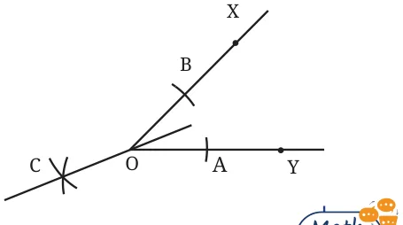
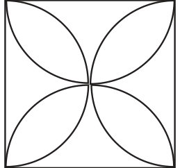

- Construct at least 4 different angles. Draw their bisectors.
- Construct the 8-petalled figure shown in Fig. 6.5.
- In Step 2 of angle bisection, if arcs of equal radius are drawn on the other side, as shown in the figure, will the line OC still be an angle bisector? Explore this through construction, and then justify your answer.

- What are the other angles that can be constructed using angle bisection? Can you construct \(65.5^{\circ}\) angle?
- Come up with a method to construct the angle bisector using a rope.
- Construct the following figure.

How do we construct the petals so that they are of the maximum possible size within a given square?
Chapter 6 · Constructions and Tilings